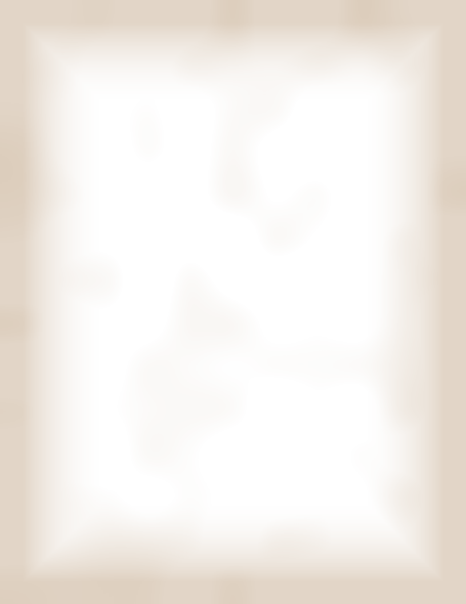
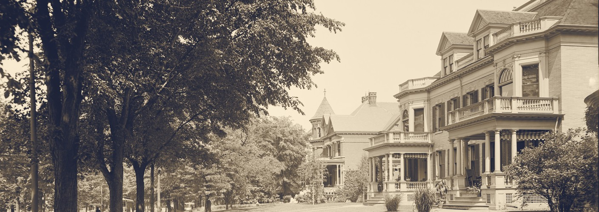
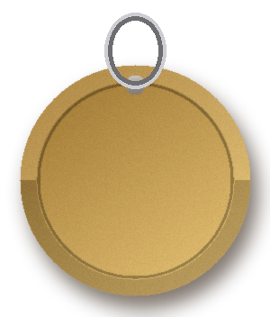
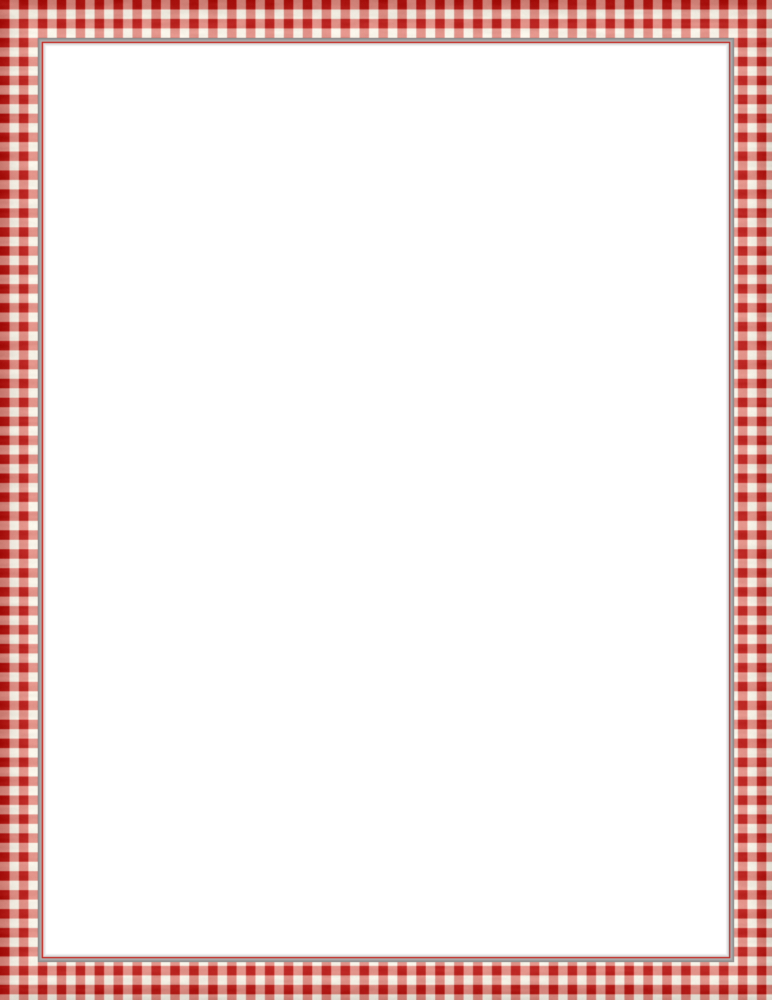

Before supper, a stroll
Est. 1901
Up the Hill

The fine houses up the hill. Every one has a dog that knows our back door.

DOG LICENSE
1910
No. 55
From Joe's stove
Supper
Minestrone.15
Beans, greens, little pasta, tomato broth.
Chicken cacciatore.45
Braised with peppers, mushrooms, tomato.
Something sweet
Dolci
Cannoli.10
Orange ricotta, chocolate chips, pistachio.
Spumoni.10
Cherry, pistachio and chocolate ice cream.
No wine, all fizz
To Drink
Blood orange soda.05
Rosemary syrup, lemon, soda water.
Red as the checked cloth.
Lemonade.05
Pressed lemons, cold from the ice box.
Espresso.05
Dark roast, a twist of peel.
Cold milk.03
A tall glass, or a saucer.
Every night my friend comes round the back for his supper. Tonight he brings a lady. Joe, the candle!
Tony
Prices subject to change. Telephone Main 1909. Form T-55.No muzzles out back. No cats, not even two.
